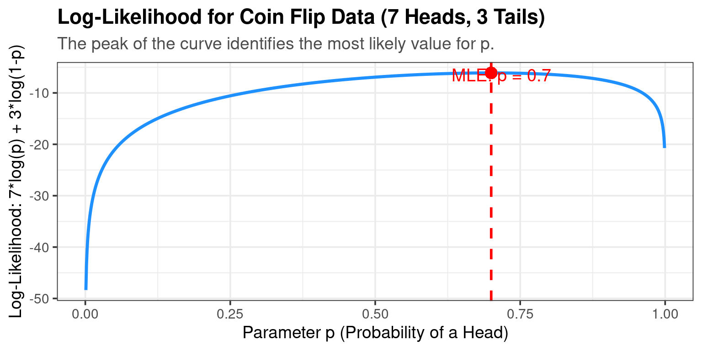
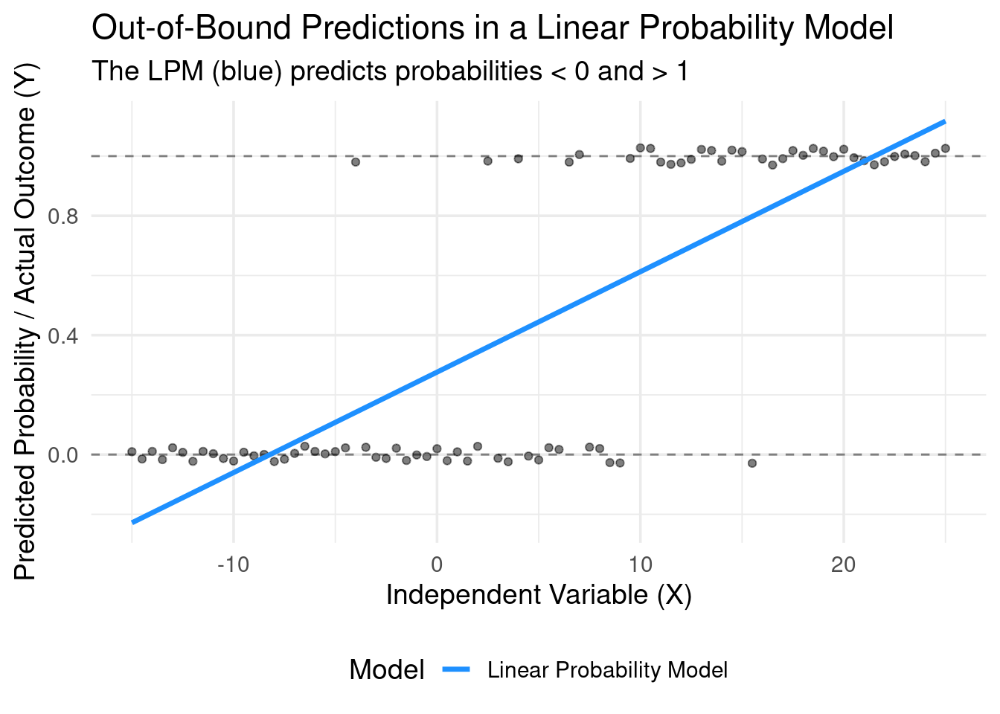
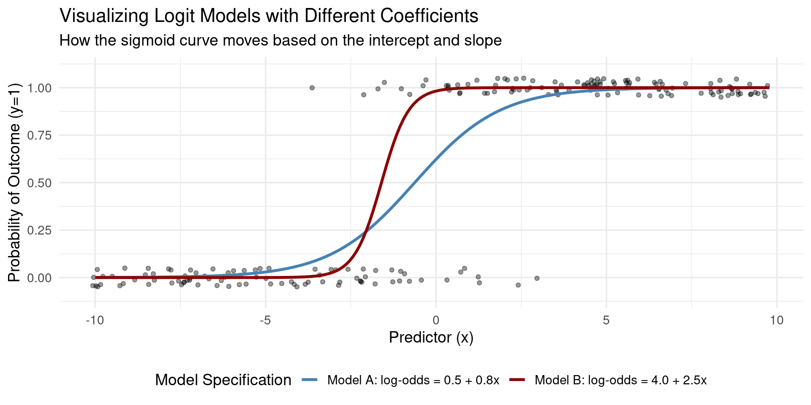

Empirical Economics
Lecture 6: Binary Outcome Data
Outline
Course Overview
- Statistics and Probability - Basic Concepts
- Statistics and Probability - Hypothesis Testing
- The Linear Regression Model
- Time Series Data
- Panel Data (FE) and Control Variables
- Binary Outcome Data
- Potential Outcomes and Difference-in-differences
- Hands-on Econometrics in Practice
What do we do today?
We have seen cross sectional and time series data
This lecture, we will talk about methods used when we can combine features of cross-sectional and time-series data
We will introduce two workhorse econometrics models, the Fixed Effects (FE) model, and the Random Effects (RE) model
We discuss a special case of panel data in the form of event studies.
Introduction
Binary Outcomes
- Many interesting economic and social questions have a binary (0/1) outcome. We need special tools to model these.
Examples: Binary Outcomes
- Labor Economics: Does a person participate in the labor force? (Yes=1, No=0)
- Finance: Does a company default on its loan? (Default=1, No Default=0)
- Marketing: Does a consumer purchase a product after seeing an ad? (Purchase=1, No Purchase=0)
- Health Economics: Does a patient’s insurance status affect whether they receive a certain treatment? (Treatment=1, No Treatment=0)
- Political Science: Does a person vote for a specific candidate? (Vote=1, Don’t Vote=0)
- Our dependent variable, \(y\), can only take two values: 0 and 1.
Linear Probability Model (LPM)
What if we just use what we know? Ordinary Least Squares (OLS).
When we apply OLS to a binary dependent variable, we call it the Linear Probability Model (LPM).
Definition: Linear Probability Model
\[y_i = \beta_0 + \beta_1 x_{1i} + \beta_2 x_{2i} + ... + \epsilon_i\]
Where \(y_i\) is either 0 or 1.
- Key Insight: The expected value of a binary variable is the probability that it equals 1. \(E[y_i | X_i] = 1 \cdot P(y_i=1 | X_i) + 0 \cdot P(y_i=0 | X_i) = P(y_i=1 | X_i)\)
- This makes interpretation very appealing…
LPM Interpretation
Since \(E[y_i | X_i] = P(y_i=1 | X_i)\), the LPM becomes: \(P(y_i=1 | X_i) = \beta_0 + \beta_1 x_{1i} + ...\)
Interpretation of Coefficients:
- \(\beta_k\) is the change in the probability that \(y=1\) for a one-unit change in \(x_k\), holding other factors constant.
- Simplicity: Easy to estimate (just OLS) and coefficients are incredibly easy to interpret as changes in probability.
Example: Interpretation of LPM
Suppose we have a model like: employed = 0.20 + 0.15 * education_years
Each additional year of education is associated with a 0.15 (or 15 percentage point) increase in the probability of being employed.
Problems with LPM: Out-of-Bounds Predictions
The model is linear, but probability is bounded by \([0, 1]\). The LPM doesn’t know this.
\[P(y=1|X) = \hat{\beta}_0 + \hat{\beta}_1 X\]
Nothing in the OLS mechanics prevents the predicted value, \(\hat{y}\), from being less than 0 or greater than 1 for certain values of X.
- Interpretation of a predicted probability of 1.2 or -0.1 is nonsensical.
Illustration
Problems with LPM: The Error Term
- The assumptions of the Classical Linear Model are violated.
- Inherent Heteroskedasticity:
- The variance of the error term depends on the values of the independent variables.
- \(Var(\epsilon_i | X_i) = p_i(1-p_i)\), where \(p_i = P(y_i=1|X_i)\)
- Since \(p_i\) depends on X, the variance is not constant. This is heteroskedasticity.
- Consequence: OLS standard errors are biased. We could use robust standard errors to fix this problem.
LPM Summary
Pros: Simple to interpret. It is also easy to incorporate fixed effects in an LPM.
Cons: Nonsensical predictions, violates key OLS assumptions.
We need a model that constrains the predicted probability to be between 0 and 1. We need a non-linear model.
This requires a different way of thinking about the choice process.
Logit and Probit Models
The Latent Variable Framework
Let’s imagine the binary choice is driven by an unobserved, underlying continuous variable, \(y^*\).
\(y^*\) can be thought of as the “net utility,” “propensity,” or “tendency” to choose 1.
Definition: Latent Variable Framework
\(y_i^* = \beta_0 + \beta_1 x_i + \epsilon_i\)
We don’t observe \(y^*\). We only observe the outcome, y, based on a threshold (usually normalized to 0):
- If \(y_i^* > 0\), then we choose Yes (\(y_i = 1\))
- If \(y_i^* \le 0\), then we choose No (\(y_i = 0\))
The probability that \(y_i=1\) is the probability that \(y_i^*\) is greater than 0.
\[ P(y_i=1) = P(y_i^* > 0) = P(\beta_0 + \beta_1 x_i + \epsilon_i > 0) = P(\epsilon_i > -(\beta_0 + \beta_1 x_i)) \]
From Latent Variables to Probit & Logit
This links the probability of the observed outcome to the distribution of the unobserved error term, \(\epsilon_i\).
The final step depends on what we assume about the distribution of \(\epsilon_i\).
\[ P(y_i=1) = P(\epsilon_i > -X_i'\beta) = 1 - F(-X_i'\beta) \]
where F is the Cumulative Distribution Function (CDF) of \(\epsilon_i\).
Probit and Logit
- Two common choices for \(F\) are the normal distribution (Probit model) and the logistic distribution (Logit model)
Definition: Probit and Logit Models
Probit Model: Assumes \(\epsilon_i\) follows a Standard Normal distribution.
- \(P(y_i=1 | X_i) = 1 - \Phi (-\beta x_i) = \Phi(\beta x_i)\)
- where \(\Phi(\cdot)\) is the Standard Normal CDF.
Logit Model: Assumes \(\epsilon_i\) follows a Standard Logistic distribution.
- \(P(y_i=1 | X_i) = 1 - \Lambda(-\beta x_i) = \Lambda(\beta x_i) = \frac{e^{\beta x_i}}{1 + e^{\beta x_i}}\)
- where \(\Lambda(\cdot)\) is the Standard Logistic CDF.
In both cases, \(1-F(-\beta x_i) = F(\beta x_i)\), since both distributions are symmetric. Both CDFs produce the S-shaped curve we need.
Visualization Logit and Probit Models
Estimation of Logit and Probit
Estimation: Maximum Likelihood (MLE)
- Remember that in OLS, we take \(\sum (y_i - \hat{y_i} (\beta, x_i))^2\) and set the derivative to zero to express the optimal \(\beta\) coefficients.
- These conditions do not lead to a unique expression for the \(\beta\)-coefficients in Logit/Probit.
- Hence we can’t use OLS. Instead, we use Maximum Likelihood Estimation (MLE).
Definition: Maximum Likelihood Estimation
MLE finds the parameter values (\(\beta\)) that maximize the probability of observing the actual data we collected.
- In other words: “Given our data, what are the most likely parameter values that could have generated it?”
Simple MLE Example: A Biased Coin
Example: A Biased Coin
Imagine you flip a coin 10 times and get 7 Heads (H) and 3 Tails (T).
- Data: {H, H, T, H, H, T, H, H, T, H}
- Question: What is your best guess for p, the probability of getting a Head?
The Likelihood Function \(L(p | \text{Data})\): The probability of observing this specific sequence is: \[L(p) = p \cdot p \cdot (1-p) \cdot p \cdot p \cdot (1-p) \cdot p \cdot p \cdot (1-p) \cdot p = p^7 (1-p)^3\]
The goal is to find the value of p that maximizes this function.
- Intuition: Your gut says p = 0.7.
- Optimization: We can take lots of values of \(p\) and calculate the likelihood, and see which value of \(p\) gives us the highest likelihood.
- The result is indeed \(\hat{p}_{MLE} = 0.7\).
This is the value of p that makes the data we saw “most likely.”
MLE Visualization
MLE Visualization: Biased Coin
MLE for Probit/Logit Models
For our regression models, the principle is the same but more complex.
The Likelihood Function is the product of the probabilities of each individual observation: \(L(\beta) = \prod_{i=1}^{N} [P(y_i=1|X_i)]^{y_i} \cdot [1 - P(y_i=1|X_i)]^{1-y_i}\)
- If \(y_i=1\), we use \(P(y_i=1|X_i)\)
- If \(y_i=0\), we use \(1-P(y_i=1|X_i) = P(y_i=0|X_i)\)
We plug in the Probit or Logit formula for \(P(y_i=1|X_i)\) and use a computer to find the \(\beta\) vector that maximizes this function (or more commonly, the log of this function, the Log-Likelihood).
MLE: Probit Example
Example: MLE for Probit
Likelihood Function: \[ \mathcal{L}(\beta) = \prod_{i=1}^n \Phi(X_i\beta)^{Y_i} [1 - \Phi(X_i\beta)]^{1-Y_i} \]
Log-Likelihood Function: \[ \ln\mathcal{L}(\beta) = \sum_{i=1}^n \left\{ Y_i \ln\Phi(X_i\beta) + (1-Y_i)\ln[1-\Phi(X_i\beta)] \right\} \]
First-Order Condition (FOC): \[ \frac{\partial \ln\mathcal{L}(\beta)}{\partial \beta} = \sum_{i=1}^n \left[ \frac{Y_i \phi(X_i\beta)}{\Phi(X_i\beta)} - \frac{(1-Y_i)\phi(X_i\beta)}{1-\Phi(X_i\beta)} \right] X_i = 0 \]
Interpreting Coefficients
In Probit and Logit models, the estimated coefficients (\(\hat{\beta}\)) are NOT marginal effects.
\[ P(y=1|X) = F(\beta x_i ) \]
A one-unit change in \(x_k\) changes the argument \(\beta x_i\) by \(\beta_k\).
But the change in the probability depends on the slope of the S-curve, which depends on the values of all X variables:
\[ \frac{\partial P(y=1 | x_i)}{\partial x_i} = F'(\beta x_i) \cdot \beta = f(\beta x_i) \cdot \beta \]
This means that the change in the probability does not only depend on \(\beta\), but also on the values of the independent variabels \(x_i\) and the function \(F'\).
So, how do we get meaningful interpretations?
Interpretation Method 1: Marginal Effect at the Mean
- We simply calculate the change in predicted probability for a change in an x-variable at a particular value.
Marginal Effect at the Mean
The marginal effect at the mean equals:
\[ \frac{\partial P(y=1|X)}{\partial x_k} = f(\beta \bar{x}) \cdot \beta_k \]
where \(f(\cdot)\) is the PDF, the derivative of the CDF \(F\).
In other words, we simply calculate the MEs with all X variables set to their sample means.
Problem: No single observation in the data might actually have all mean values. “The average person” doesn’t exist.
Interpretation Method 2: Average Marginal Effect
- This is the modern, preferred standard. It gives the best summary of the effect for the population in the sample.
Average Marginal Effect
The Average Marginal Effect (AME) equals:
\[ \frac{\partial P(y=1|X)}{\partial x_k} = \frac{1}{N} \sum_{i=1}^N f(\beta x_i) \cdot \beta_k \]
In other words, we compute the marginal effect using the values of each observations, and then take the average.
Interpretation Method 3: Odds Ratios (Logit Only)
- For the Logit model, we can interpret results using Odds Ratios.
Definition: Odds Ratio (OR)
The odds are defined as: \(\text{Odds}=\frac{P(y=1)}{P(y=0)} = \frac{P}{1-P}\).
For example, if P=0.8, Odds = 0.8 / 0.2 = 4 (or “4 to 1”). If P=0.5, Odds = 0.5 / 0.5 = 1.
The Logit model can be written as: \[ \ln(\frac{P}{1-P}) = \ln(\text{Odds}) = \beta_0 + \beta_1 x_1 + ... \qquad(1)\]
The model is linear in the log-odds.
Interpretation Method: Odds Ratio (Cont.)
- Exponentiating both sides of Equation 1 gives: \(\text{Odds}=e^{\beta_0 + \beta_1 X_1 + \dots}\)
- The Odds Ratio compares the odds for two different values of a predictor \(x_j\). Suppose we increase \(x_j\) by 1 unit while holding other predictors constant: \[ \text{OR}_j = \frac{\text{Odds} (X_j + 1)}{\text{Odds} (X_j)} = e^{\beta_j} \]
Odds Ratios Interpretation
- Interpretation: A one-unit increase in \(x_k\) multiplies the odds of success by a factor of \(e^{\beta_k}\).
Example: Odds Ratios
If \(\hat{\beta}_k = 0.2\), then \(e^{0.2} \approx 1.22\). A one-unit increase in \(x_k\) increases the odds of the outcome by 22%.
If \(\hat{\beta}_k = -0.5\), then \(e^{-0.5} \approx 0.61\). A one-unit increase in \(x_k\) decreases the odds by about 39% (multiplies them by 0.61).
Interaction Terms
- Interaction effects in probit/logit models are also not straightforward:
Interaction Effects in Logit/Probit
Suppose our model has two independent variables and an interaction effect, i.e. \(P(y | x_1, x_2) = F(\beta_0 + \beta_1 x_1 + \beta_2 x_2 + \beta_3 x_1 x_2)\).
We already know the marginal effect (ME) of \(x_1\) on the conditional probability is the partial derivative of P(y=1 | X) with respect to \(x_1\):
\(ME_{x_1} = f(\beta_0+\beta_1 x_1 + \beta_2 x_2 + \beta_3 x_1 x_2) \cdot (\beta_1 + \beta_3 x_2)\)
Note that the marginal effect of x₁ is not constant; it depends on the value of x₂ (due to the \(\beta_3 x_2\) term) and on the values of all variables through the \(f(\cdot)\) term.
Interaction Terms (Cont.)
Interaction Effects in Logit/Probit (Cont.)
The interaction effect is defined as the change in the marginal effect of one variable, x₁, as the other variable, x₂, changes. This is the cross-partial derivative:
Interaction Effect (IE) = ∂(ME_{x₁})/∂x₂ = ∂²P/∂x₂∂x₁
We differentiate ME_{x₁} with respect to x₂ using the product rule, where u = g(Z) and v = (β₁ + β₃x₂):
IE = [∂g(Z)/∂x₂] ⋅ (β₁ + β₃x₂) + g(Z) ⋅ [∂(β₁ + β₃x₂)/∂x₂]
Let’s compute each component: 1. ∂(β₁ + β₃x₂)/∂x₂ = β₃ 2. ∂g(Z)/∂x₂ requires the chain rule again: [dg(Z)/dZ] ⋅ [∂Z/∂x₂] = g'(Z) ⋅ (β₂ + β₃x₁)
Substituting these back into the product rule equation:
IE = [ g'(Z) ⋅ (β₂ + β₃x₁) ] ⋅ (β₁ + β₃x₂) + g(Z) ⋅ β₃
Rearranging to clarify the components:
IE = g(Z)β₃ + g'(Z)(β₁ + β₃x₂)(β₂ + β₃x₁)
4. Analysis of the Result
This formal result is profoundly different from the coefficient β₃. It consists of two parts:
g(Z)β₃: The “direct” effect, which is the interaction coefficientβ₃scaled by the PDFg(Z). This part’s sign is determined by the sign ofβ₃, but its magnitude depends on all covariatesXthroughZ.g'(Z)(β₁ + β₃x₂)(β₂ + β₃x₁): The “non-linearity” or “functional form” effect. This term arises purely becauseg(Z)is not a constant. Critically, this term exists even ifβ₃ = 0. In that case, the interaction effect would beg'(Z)β₁β₂, which is generally non-zero. This means that an interaction effect on the probabilities is an inherent feature of non-linear models, regardless of whether an interaction term is included in the linear indexZ.
Conclusion: The sign, magnitude, and even statistical significance of the true interaction effect on the probability can differ from that of the coefficient β₃. One cannot simply inspect β₃ to understand the interaction.
Contrast with the Linear Probability Model (LPM)
For the LPM, the model is \(P(y=1 | X) = \alpha_0 + \alpha_1 x_1 + \alpha_2 x_2 + \alpha_3 x_1 x_2\).
In the LPM, the interaction effect on the probability is precisely and unambiguously equal to the coefficient on the interaction term, \(\alpha_3\).
- This starkly contrasts with the result from the probit/logit model, highlighting the interpretational complexity introduced by non-linearity.
Panel Data and Fixed Effects
Goodness-of-Fit and Testing
How well does our model fit the data?
- Percent Correctly Predicted:
- If \(\hat{p}_i > 0.5\), predict \(y=1\). If \(\hat{p}_i \le 0.5\), predict \(y=0\).
- Compare predictions to actual outcomes. What percentage did we get right?
- Intuitive, but sensitive to the 0.5 cutoff.
- Pseudo R-Squared:
- Several versions exist, like McFadden’s R-squared.
- \(R^2_{McF} = 1 - \frac{\ln L_{full}}{\ln L_{null}}\) (where \(L_{null}\) is from a model with only an intercept).
- Ranges from 0 to 1, but values are much lower than OLS R-squared. A value of 0.2-0.4 can indicate a very good fit. Do not compare to OLS R-squared!
- Likelihood Ratio (LR) Test:
- Tests the joint significance of a set of variables (like the F-test in OLS).
- Compares the log-likelihood of the restricted model to the unrestricted (full) model.
- \(LR = 2(\ln L_{full} - \ln L_{restricted})\) which follows a \(\chi^2\) distribution.
Choosing Between Probit and Logit
- In practice, the choice rarely matters much.
- The Normal and Logistic distributions are very similar, except the Logistic has slightly “fatter tails” (it’s less sensitive to outliers).
- Predicted probabilities from both models are usually very close.
- Rule of Thumb:
- Logit coefficients are larger than Probit coefficients by a factor of ~1.6 - 1.8.
- Logit Marginal Effects \(\approx\) Probit Marginal Effects.
- Logit is often preferred due to the simpler interpretation of coefficients as log-odds and the direct calculation of odds ratios.
Logit and Probit in Software
The Big Picture: Generalized Linear Models (GLM)
Probit and Logit aren’t just one-off tricks. They are part of a larger family of models called Generalized Linear Models (GLM).
A GLM has three components: 1. Random Component: The probability distribution of the dependent variable. * Example: Bernoulli for Binary, Normal for OLS, Poisson for count data. 2. Systematic Component: A linear predictor. * Example: \(\eta_i = \beta_0 + \beta_1 x_{1i} + ...\) (this is the same for all models). 3. Link Function, g(·): Connects the expected value of y to the linear predictor. * \(g(E[y_i]) = \eta_i\)
| Model | Distribution (Random) | Link Function |
|---|---|---|
| OLS | Normal | Identity (\(E[y] = \eta\)) |
| Logit | Bernoulli | Logit (\(\ln(\frac{p}{1-p}) = \eta\)) |
| Probit | Bernoulli | Probit (\(\Phi^{-1}(p) = \eta\)) |
This framework unifies many different regression models!
Summary
What did we do?
Binary outcomes are everywhere. Standard OLS (the LPM) is a simple starting point but is fundamentally flawed (out-of-range predictions, bad errors).
Probit and Logit are the standard solutions. They are derived from a latent variable model and use a non-linear CDF to constrain predictions between 0 and 1.
They are estimated using Maximum Likelihood Estimation (MLE), which finds the parameters that make the observed data most probable.
Interpretation is key!
- Raw coefficients are not marginal effects.
- Use Average Marginal Effects (AMEs) to talk about changes in probability.
- Use Odds Ratios for Logit models for a multiplicative interpretation.
These models are special cases of the powerful Generalized Linear Model (GLM) framework.
The End

Empirical Economics: Lecture 6 - Binary Outcome Data